17 Simple Linear Regression
Situation:
- Metric response
- Matric predictor
17.1 The deluxe basic model
17.1.1 Likelihood
\[\begin{align*} y_{i} &\sim {\sf Norm}(\mu_i, \sigma) \\ \mu_i &\sim \beta_0 + \beta_1 x_i \end{align*}\]
Some variations:
- Replace normal distribution with something else (t is common).
- Allow standard deviations to vary with \(x\) as well as the mean.
- Use a different functional relationship between explanatory and response (non-linear regression)
Each of these is relatively easy to do. The first variation is sometimes called robust regression becuase it is more robust to unusual observations. Since it is no harder to work with t distributions than with normal distributions, that will become our go-to simple linear regression model.
\[\begin{align*} y_{i} &\sim {\sf T}(\mu_i, \sigma, \nu) \\ \mu_i &\sim \beta_0 + \beta_1 x_i \end{align*}\]
17.1.2 Priors
We need priors for \(\beta_0\), \(\beta_1\), \(\sigma\), and \(\nu\).
\(\nu\): We’ve already seend that a shifted Gamma with mean around 30 works well as a generic prior giving the data room to stear us away from normality if warranted.
\(\beta_1\): The MLE for \(\beta_1\) is
\[ \hat\beta_1 = r \frac{SD_y}{SD_x}\] so it makes sense to have a prior broadly covers the interval \((- \frac{SD_y}{SD_x}, \frac{SD_y}{SD_x})\).
\(\beta_0\): The MLE for \(\beta_0\) is
\[ \hat\beta_0 \; = \; \overline{y} - \hat \beta_1 \overline{x} \; = \; \overline{y} - r \frac{SD_y}{SD_x} \cdot \overline{x}\]
so we can pick a prior that broadly covers the interval \((\overline{y} - \frac{SD_y}{SD_x} \cdot \overline{x}, \overline{y} - \frac{SD_y}{SD_x} \cdot \overline{x})\)
\(\sigma\) measures the amount of variability in responses for a fixed value of \(x\) (and is assumed to be the same for each \(x\) in the simple version of the model). A weakly informative prior should cover the range of reasonable values of \(\sigma\) with plenty of room to spare. (Our 2-or-3-orders-of-magnititude-either-way uniform distribution might be a reasonable starting point.)
Here’s the big picture:

17.2 Example: Galton’s Data
Since we are looking at regression, let’s use an historical data set that was part of the origins of the regression story: Galton’s data on height. Galton collected data on the heights of adults and their parents.
head(mosaicData::Galton)| family | father | mother | sex | height | nkids |
|---|---|---|---|---|---|
| 1 | 78.5 | 67.0 | M | 73.2 | 4 |
| 1 | 78.5 | 67.0 | F | 69.2 | 4 |
| 1 | 78.5 | 67.0 | F | 69.0 | 4 |
| 1 | 78.5 | 67.0 | F | 69.0 | 4 |
| 2 | 75.5 | 66.5 | M | 73.5 | 4 |
| 2 | 75.5 | 66.5 | M | 72.5 | 4 |
To keep things simpler for the moment, let’s consider only women, and only one sibling per family.
set.seed(54321)
library(dplyr)
GaltonW <-
mosaicData::Galton %>%
filter(sex == "F") %>%
group_by(family) %>%
sample_n(1)Galton was interested in how people’s heights are related to their parents’ heights. He compbined the parents’ heights into the “mid-parent height”, which was the average of the two.
GaltonW <-
GaltonW %>%
mutate(midparent = (father + mother) / 2)
gf_point(height ~ midparent, data = GaltonW, alpha = 0.5)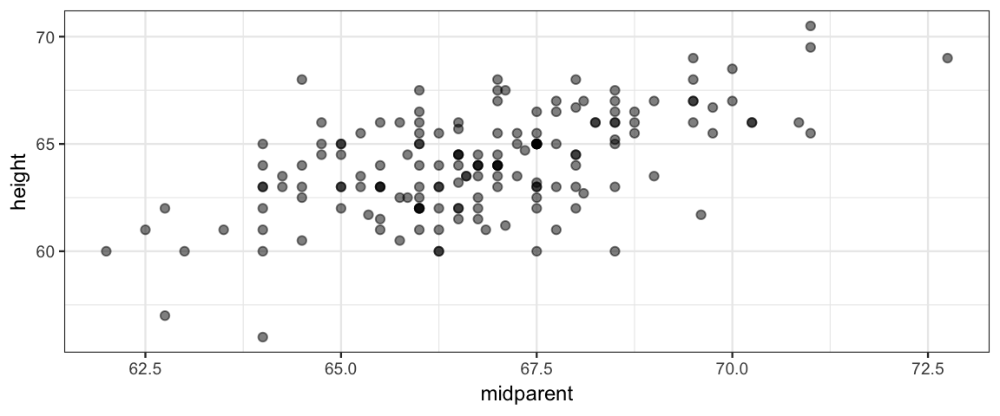
17.2.1 Describing the model to JAGS
galton_model <- function() {
for (i in 1:length(y)) {
y[i] ~ dt(mu[i], 1/sigma^2, nu)
mu[i] <- beta0 + beta1 * x[i]
}
sigma ~ dunif(6/100, 6 * 100)
nuMinusOne ~ dexp(1/29)
nu <- nuMinusOne + 1
beta0 ~ dnorm(0, 1/100^2) # 100 is order of magnitude of data
beta1 ~ dnorm(0, 1/4^2) # expect roughly 1-1 slope
}library(R2jags)
library(mosaic)
galton_jags <-
jags(
model = galton_model,
data = list(y = GaltonW$height, x = GaltonW$midparent),
parameters.to.save = c("beta0", "beta1", "sigma", "nu"),
n.iter = 5000,
n.burnin = 2000,
n.chains = 4,
n.thin = 1
)## module glm loadedlibrary(bayesplot)
library(CalvinBayes)
summary(galton_jags)## fit using jags
## 4 chains, each with 5000 iterations (first 2000 discarded)
## n.sims = 12000 iterations saved
## mu.vect sd.vect 2.5% 25% 50% 75% 97.5% Rhat n.eff
## beta0 10.695 8.008 -4.072 5.664 11.532 17.189 24.534 4.376 4
## beta1 0.800 0.120 0.593 0.702 0.787 0.877 1.020 4.071 4
## nu 33.016 27.311 6.134 14.178 24.807 42.854 106.351 1.002 1600
## sigma 1.849 0.130 1.594 1.761 1.849 1.935 2.102 1.020 140
## deviance 699.315 4.276 694.765 696.069 697.727 701.525 709.475 2.312 6
##
## DIC info (using the rule, pD = var(deviance)/2)
## pD = 3.3 and DIC = 702.6mcmc_combo(as.mcmc(galton_jags))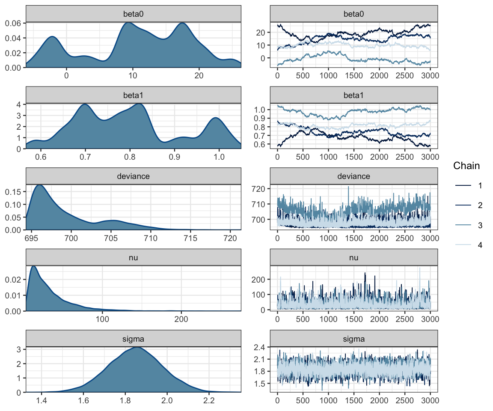
17.2.2 Problems and how to fix them
Clearly something is not working the way we would like with this model! Here’s a clue as to the problem:
posterior(galton_jags) %>%
gf_point(beta0 ~ beta1, color = ~ chain, alpha = 0.2, size = 0.4) %>%
gf_density2d(alpha = 0.5)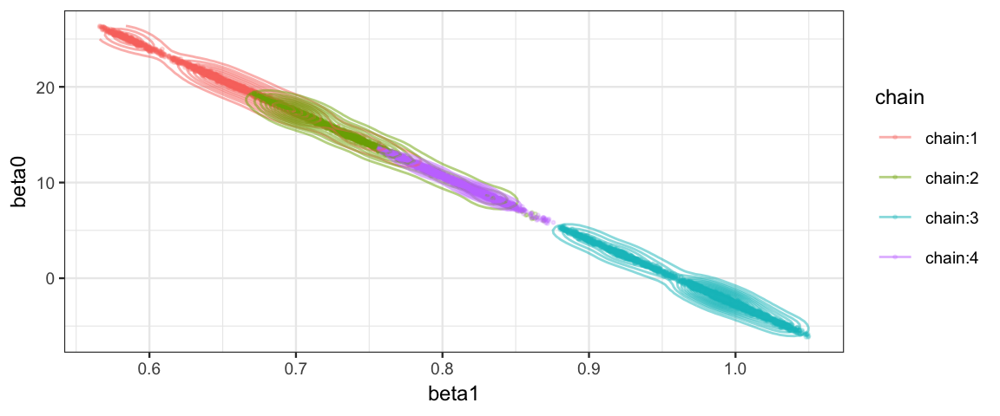
posterior(galton_jags) %>% filter(iter <= 250, chain == "chain:1") %>%
gf_step(beta0 ~ beta1, alpha = 0.8, color = ~iter) %>%
gf_density2d(alpha = 0.2) %>%
gf_refine(scale_color_viridis_c()) %>%
gf_facet_wrap(~chain) #, scales = "free")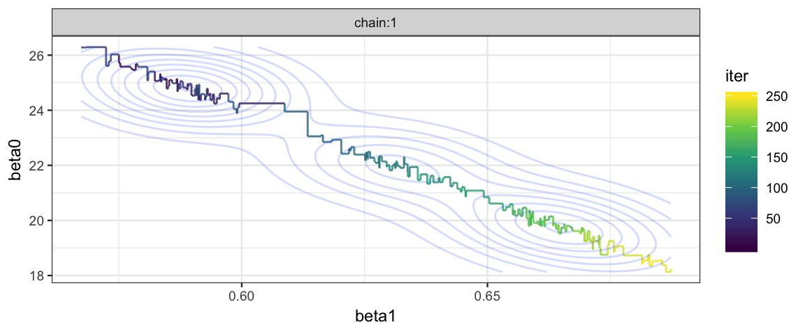
The correlation of the parameters in the posterior distribution produces a long, narrow, diagonal ridge that the Gibbs sampler samples only very slowly because it keeps bumping into edge of the cliff. (Remember, the Gibbs sampler only moves in “primary” directions.)
So how do we fix this? This is supposed to be the simple linear model after all. There are two ways we could hope to fix our problem.
Reparameterize the model so that the correlation between parameters (in the posterior distribution) is reduced or eliminated.
Use a different algorithm for posterior sampling. The problem is not with our model per se, rather it is with the method we are using (Gibbs) to sample from the posterior. Perhaps another algorithm will work better.
17.3 Centering and Standardizing
Reparameterization 1: centering
We can express this model as
\[\begin{align*} y_{i} &\sim {\sf T}(\mu_i, \sigma, \nu) \\ \mu_i &= \alpha_0 + \alpha_1 (x_i - \overline{x}) \end{align*}\]
Since
\[\begin{align*} \alpha_0 + \alpha_1 (x_i - \overline{x}) &= (\alpha_0 - \alpha_1 \overline{x}) + \alpha_1 x_i \end{align*}\]
We see that \(\beta_0 = \alpha_0 - \alpha_1 \overline{x}\) and \(\beta_1 = \alpha_1\). So we can easily recover the original parameters if we like. (And if we are primarily interested in \(\beta_1\), no translation is required.)
This reparameterization maintains the natural scale of the data, and both \(\alpha_0\) and \(\alpha_1\) are easily interpreted: \(\alpha_0\) is the mean response when the predictor is the average of the predictor values in the data.
Reparameterization 2: standardization
We can also express our model as
\[\begin{align*} z_{y_{i}} &\sim {\sf T}(\mu_i, \sigma, \nu) \\[3mm] \mu_i &= \alpha_0 + \alpha_1 z_{x_i} \\[5mm] z_{x_i} &= \frac{x_i - \overline{x}}{SD_x} \\[3mm] z_{y_i} &= \frac{y_i - \overline{y}}{SD_y} \\[3mm] \end{align*}\]
Here the change in the model is due to a transformation of the data. Subtracting the mean and dividing by the standard deviation is called standardization, and the values produced are sometimes called z-scores. The resulting distributions of \(zy\) and \(zx\) will have mean 0 and standard deviation 1. So in addition to breaking the correlation pattern, we have now put things on a standard scale, regardless of what the original units were. This can be useful for picking constants in priors (we won’t have to estimate the scale of the data involved). In addition, some algorithms work better if all the variables involved have roughly the same scale.
The downside is that we usually need to convert back to the original scales of \(x\) and \(y\) in order to interpret the results. But this is only a matter of a little easy algebra:
\[\begin{align*} \hat{z}_{y_i} &= \alpha_0 + \alpha_1 z{x_i} \\ \frac{\hat{y}_i - \overline{y}}{SD_y} &= \alpha_0 + \alpha_1 \frac{x_i - \overline{x}}{SD_x} \\ \hat{y}_i &= \overline{y} + \alpha_0 SD_y + \alpha_1 SD_y \frac{x_i - \overline{x}}{SD_x} \\ \hat{y}_i &= \underbrace{\left[\overline{y} + \alpha_0 SD_y - \alpha_1\frac{SD_y}{SD_x} \overline{x} \right]}_{\beta_0} + \underbrace{\left[\alpha_1 \frac{SD_y}{SD_x}\right]}_{\beta_1} x_i \end{align*}\]
Since Kruscske demonstrates standardization, we’ll do centering here.
galtonC_model <- function() {
for (i in 1:length(y)) {
y[i] ~ dt(mu[i], 1/sigma^2, nu)
mu[i] <- alpha0 + alpha1 * (x[i] - mean(x))
}
sigma ~ dunif(6/100, 6 * 100)
nuMinusOne ~ dexp(1/29)
nu <- nuMinusOne + 1
alpha0 ~ dnorm(0, 1/100^2) # 100 is order of magnitude of data
alpha1 ~ dnorm(0, 1/4^2) # expect roughly 1-1 slope
beta0 = alpha0 - alpha1 * mean(x)
beta1 = alpha1 # not necessary, but gives us both names
}
galtonC_jags <-
jags(
model = galtonC_model,
data = list(y = GaltonW$height, x = GaltonW$midparent),
parameters.to.save = c("beta0", "beta1", "alpha0", "alpha1", "sigma", "nu"),
n.iter = 5000,
n.burnin = 2000,
n.chains = 4,
n.thin = 1
)summary(galtonC_jags)## fit using jags
## 4 chains, each with 5000 iterations (first 2000 discarded)
## n.sims = 12000 iterations saved
## mu.vect sd.vect 2.5% 25% 50% 75% 97.5% Rhat n.eff
## alpha0 64.105 0.149 63.812 64.004 64.106 64.208 64.390 1.001 12000
## alpha1 0.740 0.081 0.577 0.687 0.740 0.795 0.900 1.001 12000
## beta0 14.686 5.428 4.008 11.050 14.655 18.253 25.540 1.001 12000
## beta1 0.740 0.081 0.577 0.687 0.740 0.795 0.900 1.001 12000
## nu 32.250 24.769 6.281 14.368 24.592 42.701 98.596 1.001 8600
## sigma 1.841 0.128 1.585 1.757 1.842 1.926 2.091 1.001 5300
## deviance 697.587 2.496 694.651 695.740 696.961 698.787 704.017 1.001 12000
##
## DIC info (using the rule, pD = var(deviance)/2)
## pD = 3.1 and DIC = 700.7mcmc_combo(as.mcmc(galtonC_jags))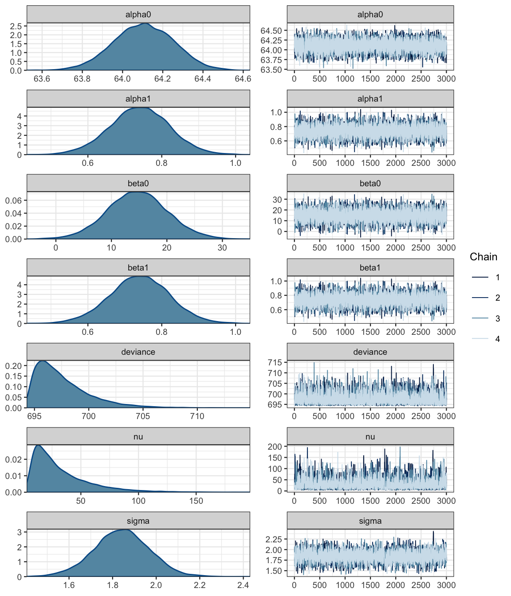
Ah! That looks much better than before.
17.4 We’ve fit a model, now what?
After centering or standardizing, JAGS works much better. We can now sample from our posterior distribution. But what do we do with our posterior samples?
17.4.1 Estimate parameters
If we are primarily interested in a regression parameter (usually the slope parameter is much more interesting than the intercept parameter), we can use an HDI to express our estimate.
hdi(posterior(galtonC_jags), pars = "beta1")| par | lo | hi | prob |
|---|---|---|---|
| beta1 | 0.5825 | 0.9044 | 0.95 |
mcmc_areas(as.mcmc(galtonC_jags), pars = "beta1", prob = 0.95)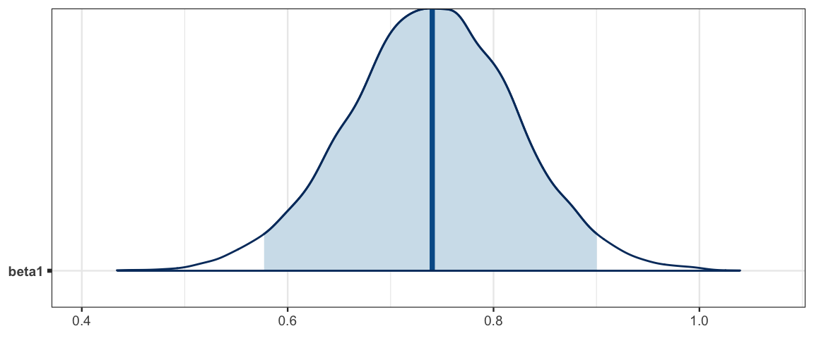
Galton noticed what we see here: that the slope is less than 1. This means that children of taller than average parents tend to be shorter than their parents and children of below average parents tend to be taller than their parents. He referred to this in his paper as “regression towards mediocrity”. As it turns out, this was not a special feature of the heridity of heights but a general feature of linear models. Find out more in this Wikipedia artilce.
17.4.2 Make predictions
Suppse we know the heights of a father and mother, from which we compute
ther mid-parent height \(x\).
How tall would we predict their daughters will be as adults?
Each posterior sample provides an answer
by describing a t distribution with nu degrees of freedom,
mean \(\beta_0 + \beta_1 x\), and standard deviation \(\sigma\).
The posterior distribution of the average hieght of daughters born to parents with midparent height \(x = 70\) is shown below, along with an HDI.
posterior(galtonC_jags) %>%
mutate(mean_daughter = beta0 + beta1 * 70) %>%
gf_dens(~mean_daughter)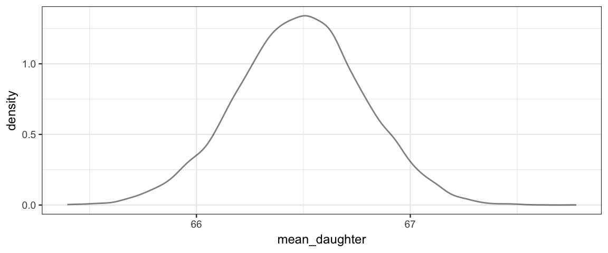
Galton_hdi <-
posterior(galtonC_jags) %>%
mutate(mean_daughter = beta0 + beta1 * 70) %>%
hdi(pars = "mean_daughter")
Galton_hdi| par | lo | hi | prob |
|---|---|---|---|
| mean_daughter | 65.89 | 67.07 | 0.95 |
So on average, we would predict the daughters to be about 66 or 67 inches tall.
We can visualize this by drawing a line for each posterior sample. The HDI should span the middle 95% of these.
gf_abline(intercept = ~beta0, slope = ~beta1, alpha = 0.01,
color = "steelblue",
data = posterior(galtonC_jags) %>% sample_n(2000)) %>%
gf_point(height ~ midparent, data = GaltonW,
inherit = FALSE, alpha = 0.5) %>%
gf_errorbar(lo + hi ~ 70, data = Galton_hdi, color = "skyblue",
width = 0.2, size = 1.2, inherit = FALSE)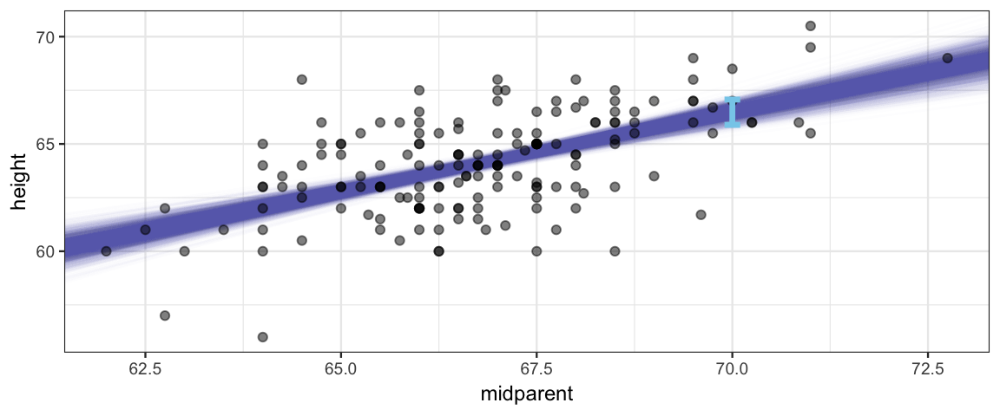
But this may not be the sort of prediction we want. Notice that most daughters’ heights are not in the blue band in the picture. That band tells about the mean but doesn’t take into account how much individuals vary about that mean. We can add that information in by taking our estimate for \(\sigma\) into account.
Here we generate heights by adding noise to the estimate given by values of \(\beta_0\) and \(\beta_1\).
posterior(galtonC_jags) %>%
mutate(new_ht = beta0 + beta1 * 70 + rt(1200, df = nu) * sigma) %>%
gf_point(new_ht ~ 70, alpha = 0.01, size = 0.7, color = "steelblue") %>%
gf_point(height ~ midparent, data = GaltonW,
inherit = FALSE, alpha = 0.5) 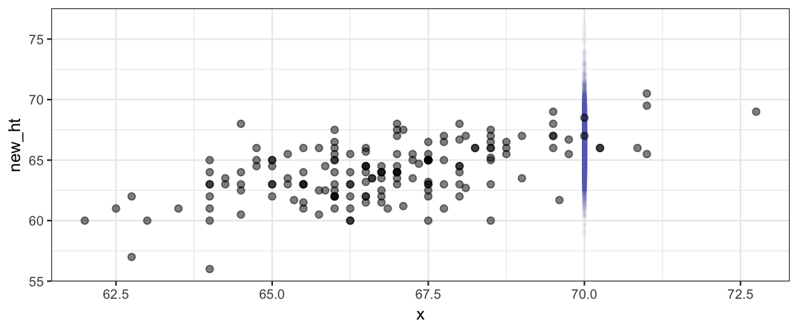
Galton_hdi2 <-
posterior(galtonC_jags) %>%
mutate(new_ht = beta0 + beta1 * 70 + rt(1200, df = nu) * sigma) %>%
hdi(regex_pars = "new")
Galton_hdi2| par | lo | hi | prob |
|---|---|---|---|
| new_ht | 62.38 | 70.53 | 0.95 |
So our model expects that most daughters whose parents have a midparent height
of 70 inches are between
62.4 and
70.5
inches tall. Notice that this interval
is taking into account both the uncertainty in our estimates of the
parameters \(\beta_0\), \(\beta_1\), \(\sigma\), and \(\nu\) and the variability in
heights that \(\sigma\) and \(\nu\) indicate.
With a little more work, we can create intervals like this at several different midparent heights.
Post_galtonC <- posterior(galtonC_jags)
Grid <-
expand.grid(midparent = 60:75, iter = 1:nrow(Post_galtonC))
posterior(galtonC_jags) %>%
mutate(noise = rt(12000, df = nu)) %>%
left_join(Grid) %>%
mutate(height = beta0 + beta1 * midparent + noise * sigma) %>%
group_by(midparent) %>%
do(hdi(., pars = "height")) ## Joining, by = "iter"## # A tibble: 16 x 5
## # Groups: midparent [16]
## midparent par lo hi prob
## <int> <fct> <dbl> <dbl> <dbl>
## 1 60 height 55.2 63.2 0.95
## 2 61 height 55.9 63.9 0.95
## 3 62 height 56.7 64.6 0.95
## 4 63 height 57.4 65.3 0.95
## 5 64 height 58.3 66.1 0.95
## 6 65 height 59.1 66.8 0.95
## 7 66 height 59.7 67.4 0.95
## 8 67 height 60.5 68.2 0.95
## 9 68 height 61.2 69.0 0.95
## 10 69 height 61.9 69.6 0.95
## 11 70 height 62.6 70.4 0.95
## 12 71 height 63.1 70.9 0.95
## 13 72 height 63.9 71.8 0.95
## 14 73 height 64.7 72.5 0.95
## 15 74 height 65.4 73.3 0.95
## 16 75 height 66.0 74.1 0.95posterior(galtonC_jags) %>%
mutate(noise = rt(12000, df = nu)) %>%
left_join(Grid) %>%
mutate(avg_height = beta0 + beta1 * midparent,
height = avg_height + noise * sigma) %>%
group_by(midparent) %>%
do(hdi(., pars = "height")) %>%
gf_ribbon(lo + hi ~ midparent, fill = "steelblue", alpha = 0.2) %>%
gf_errorbar(lo + hi ~ midparent, width = 0.2, color = "steelblue", size = 1.2) %>%
gf_point(height ~ midparent, data = GaltonW,
inherit = FALSE, alpha = 0.5)## Joining, by = "iter"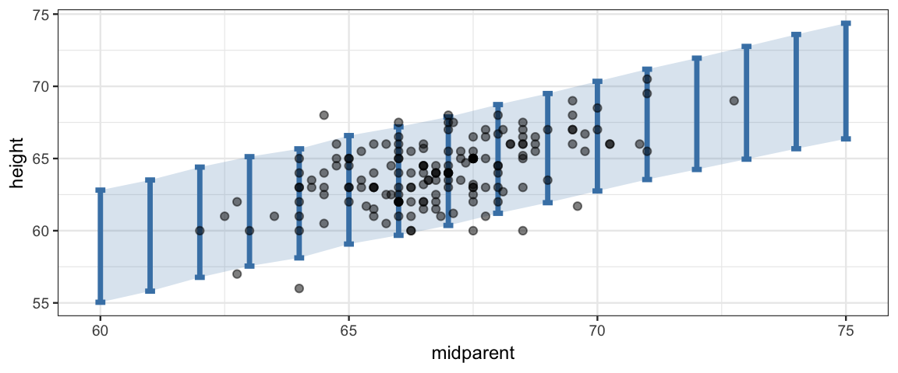
Comparing the data to the posterior predictions of the model is called a posterior predictive check; we are checking to see whether the data are consistent with what our posterior distribution would predict. In this case, things look good: most, but not all of the data is falling inside the band where our models predicts 95% of new observations would fall.
If the posterior predictive check indicates systematic problems with our model, it may lead us to propose another (we hope better) model.
17.5 Fitting models with Stan
Centering (or standardizing) is sufficient to make JAGS efficient enough to use. But we can also use Stan, and since Stan is not bothered by correlation in the posterior the way JAGS is, Stan works well even without reparamterizing the model.
Here is the Stan equivalent to our original JAGS model.
data {
int<lower=0> N; // N is a non-negative integer
real y[N]; // y is a length-N vector of reals
real x[N]; // x is a length-N vector of reals
}
parameters {
real beta0;
real beta1;
real<lower=0> sigma;
real<lower=0> nuMinusOne;
}
transformed parameters{
real<lower=0> nu;
nu = nuMinusOne + 1;
}
model {
for (i in 1:N) {
y[i] ~ student_t(nu, beta0 + beta1 * x[i], sigma);
}
beta0 ~ normal(0, 100);
beta1 ~ normal(0, 4);
sigma ~ uniform(6.0 / 100.0, 6.0 * 100.0);
nuMinusOne ~ exponential(1/29.0);
}library(rstan)
galton_stanfit <-
sampling(
galton_stan,
data = list(
N = nrow(GaltonW),
x = GaltonW$midparent,
y = GaltonW$height
),
chains = 4,
iter = 2000,
warmup = 1000
) galton_stanfit## Inference for Stan model: d35148cb031c8088132ce1e0ec66e1bb.
## 4 chains, each with iter=2000; warmup=1000; thin=1;
## post-warmup draws per chain=1000, total post-warmup draws=4000.
##
## mean se_mean sd 2.5% 25% 50% 75% 97.5% n_eff Rhat
## beta0 14.73 0.16 5.59 3.98 11.00 14.71 18.42 25.49 1254 1
## beta1 0.74 0.00 0.08 0.58 0.68 0.74 0.80 0.90 1252 1
## sigma 1.84 0.00 0.13 1.59 1.75 1.84 1.92 2.09 2018 1
## nuMinusOne 31.28 0.57 26.91 5.12 12.76 22.60 41.15 106.34 2230 1
## nu 32.28 0.57 26.91 6.12 13.76 23.60 42.15 107.34 2230 1
## lp__ -250.05 0.04 1.47 -253.84 -250.71 -249.70 -248.98 -248.30 1351 1
##
## Samples were drawn using NUTS(diag_e) at Wed Mar 27 10:03:01 2019.
## For each parameter, n_eff is a crude measure of effective sample size,
## and Rhat is the potential scale reduction factor on split chains (at
## convergence, Rhat=1).gf_point(beta1 ~ beta0, data = posterior(galton_stanfit), alpha = 0.5)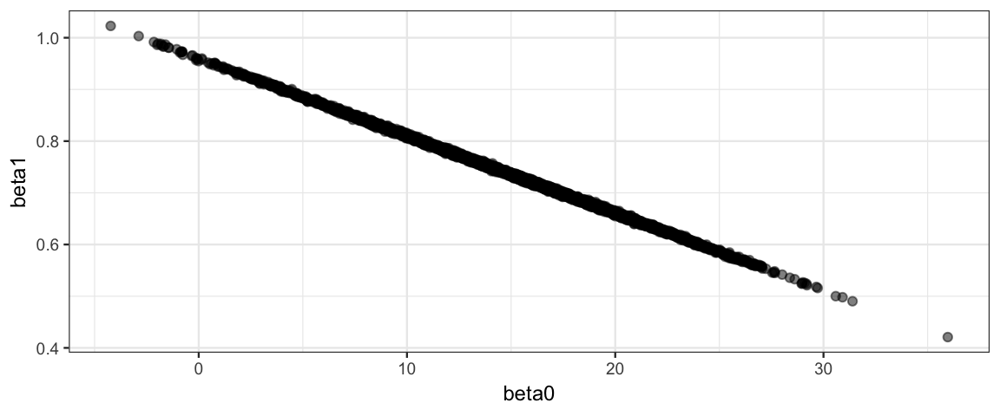
mcmc_combo(as.mcmc.list(galton_stanfit),
pars = c("beta0", "beta1", "sigma", "nu"))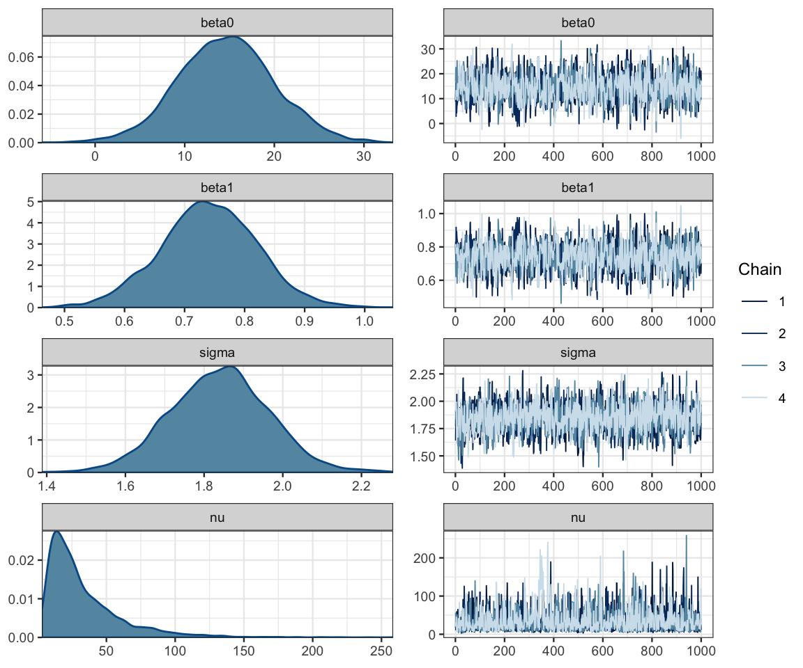
17.6 Exercises
Use Galton’s data on the men to estimate
- The average of height of men whose parents are 65 and 72 inches tall.
- The middle 50% of heights of men whose parents are 65 and 72 inches tall.
You may use either JAGS or Stan.
When centering, why did we center x but not y?